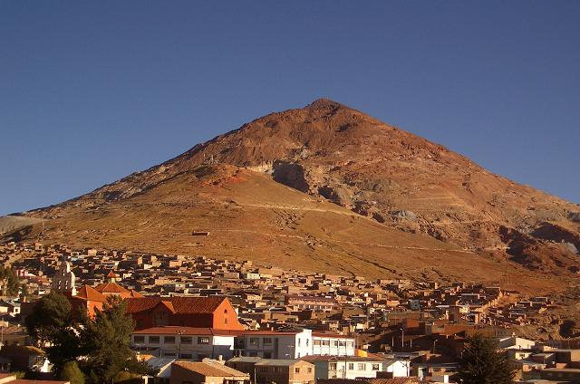
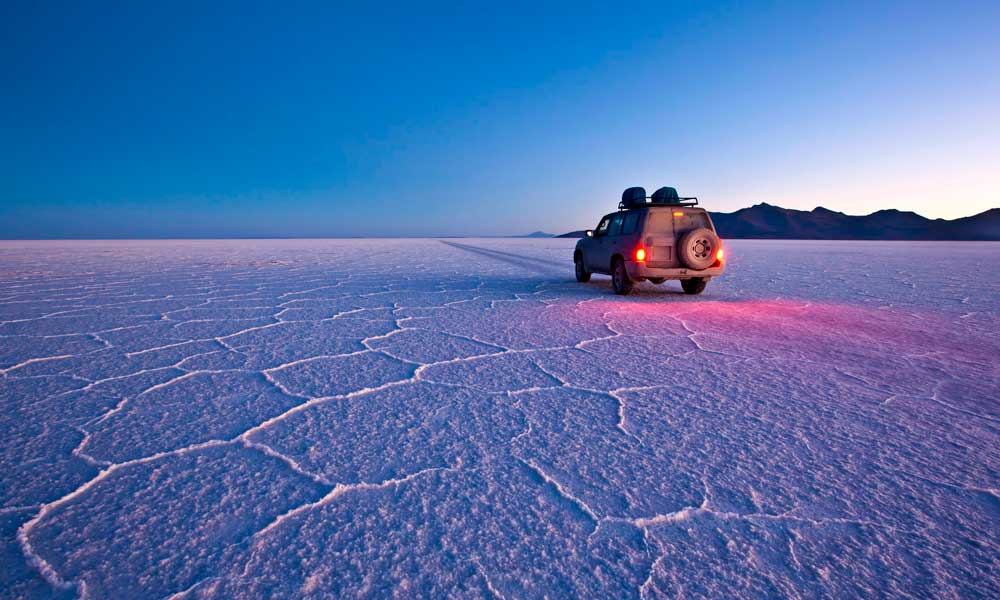
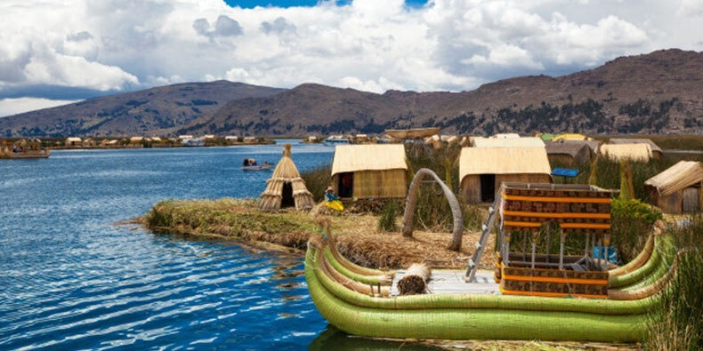

Bolivia es increíblemente rica en bellos paisajes naturales y culturales. Aquí hemos recopilado los aspectos más destacados. Para lugares y consejos aún más emocionantes
cuenta con muchos lugares turistico entre en los cuales veremos a continuacion.
El Cerro Rico con sus más de 100 minas de Plata en actual explotación y el museo de la Casa de la Moneda, uno de los más importantes de América latina.
Una de las maravillas de la naturaleza, con una planicie de 12‘000 km2 de pura sal y visitando laguna blanca, verde y colorada, con flamengos. Excursión de uno a tres días en vehículos 4×4 – como opción entrando/saliendo por Chile – San Pedro de Atacama.
El lago sagrado de los Incas a 3810 m sobre nivel del mar tiene 8288 km2 y es el lago navegable más alto del mundo – en la parte Boliviana están las famosas Islas del Sol y de la Luna-, las cuales pueden ser visitadas con conexiones diarias de botes, para descubrir las Raíces de los Incas, visitando las ruinas de Chinkana, el palacio de Pilkokaina, la escalinata y fuente del Inca.
